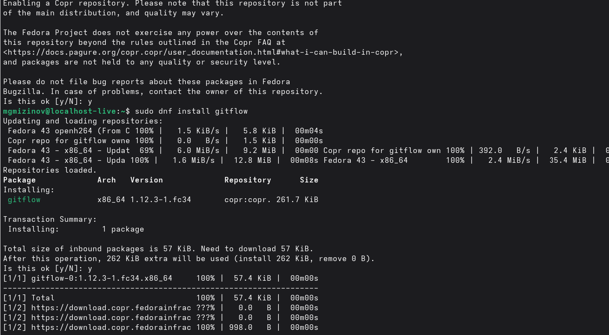
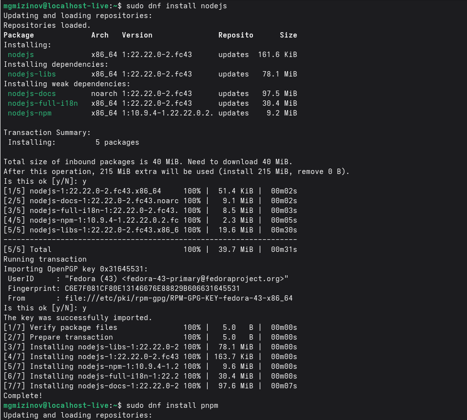
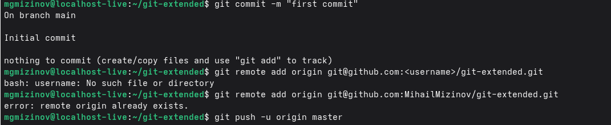
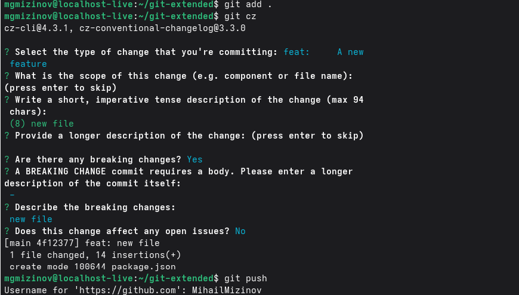
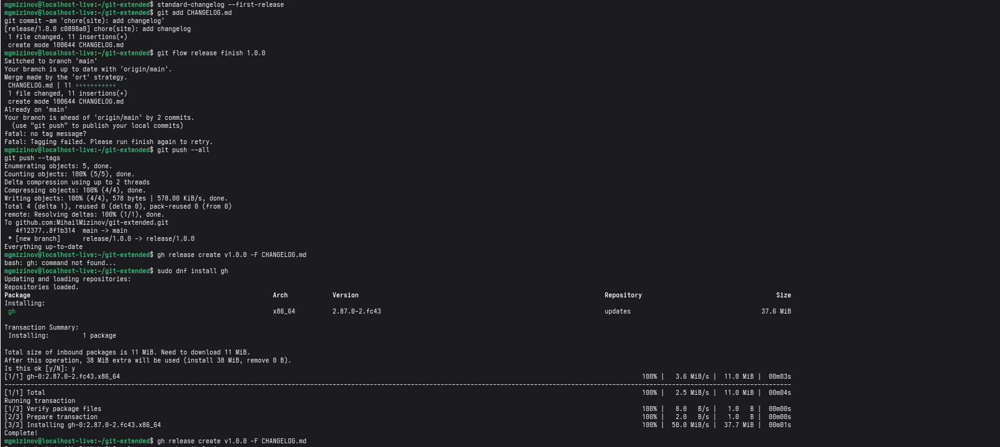

Лабораторная работа 4
Выполнил Мизинов Михаил НКАбд-04-25
Цель работы
Получение навыков правильной работы с репозиториями git.
Задание
Выполнить работу для тестового репозитория. Преобразовать рабочий репозиторий в репозиторий с git-flow и conventional commits.
Выполнение работы
Установка git-flow

Установка Node.js

Настройка Node.js
Общепринятые коммиты commitizen и standard-changelog

Практический сценарий использования git Создание репозитория git



Работа с репозиторием git


Вывод
Полученил необходимые навыки правильной работы с репозиториями git.